Business outcome — Home
The Finance view: $757,338 potential leakage across 23 findings, $0 Finance-validated, cash recovered not yet tracked, and the four-stage path from contract to cash.
"Revenue is earned through contract entitlements. When an entitlement doesn't flow into billing, the value can disappear between the contract and the cash. These three numbers are kept apart on purpose: detected is not validated, and validated is not cash."
It frames the problem in Finance terms before any technology appears.
"This is a real Finance problem worth investigating."
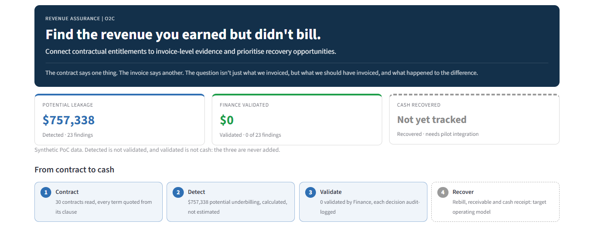
01_home_business_outcome.png · Home, top of page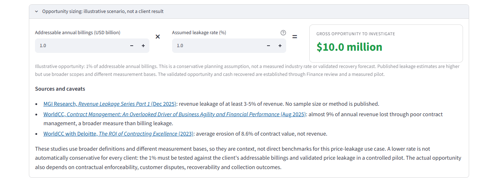
01b_opportunity_sizing.png · Home → "Opportunity sizing" expander (optional): $1B × 1% = $10M to investigate, clearly labelled illustrative, with sources and caveatsThe end-to-end contract-to-cash journey
The full journey from contract data to measured cash recovery. Blue boxes are built in the PoC; grey dashed boxes are pilot scope.
"Today the prototype covers reading the contract, reconciling it against invoices, and putting an evidence-backed finding in front of Finance. Rebilling, receivables and cash receipt are the target operating model we would take into a pilot."
It shows exactly where the PoC ends and what a pilot adds, before anyone has to ask.
"They are clear about what is built and what isn't."
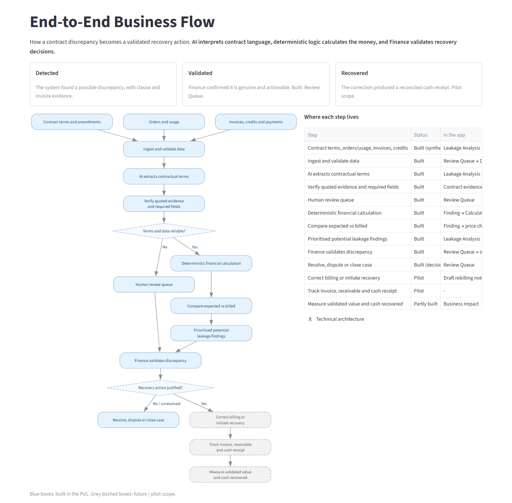
02_end_to_end_journey.png · Sidebar → How it works → End-to-End FlowLimitation: this page sits under "How it works" and is fairly detailed. The "Where each step lives" table is truncated on the right by the app's own layout.
The priority case
Meridian Freightways, contract C-2003: contract price $12.30 against $11.53 billed, $82,108 potential underbilling, awaiting review, with the source clause AM1.1 on page 4.
"Let me show you how one missed contract entitlement becomes a potential Finance opportunity."
It moves from a portfolio number to one concrete case the jury can follow end to end.
"Show me."
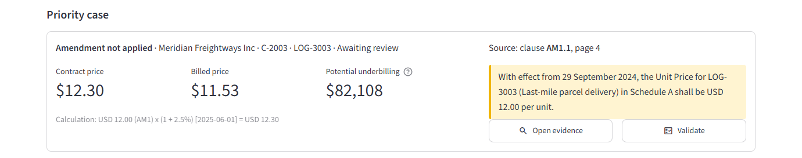
03_priority_case.png · Home → Priority case. Next click: Open evidenceContract evidence — C-2003, page 4
Amendment No. 1, highlighted on page 4: from 29 September 2024 the unit price is USD 12.00. Beside it, the terms read from the contract, each with its clause and a verified quote.
"The amendment is on page 4. The information already existed in the contract. Billing never loaded it."
The information wasn't missing. It existed in the contract and never reached billing.
"I can see why this is hard to find at scale."
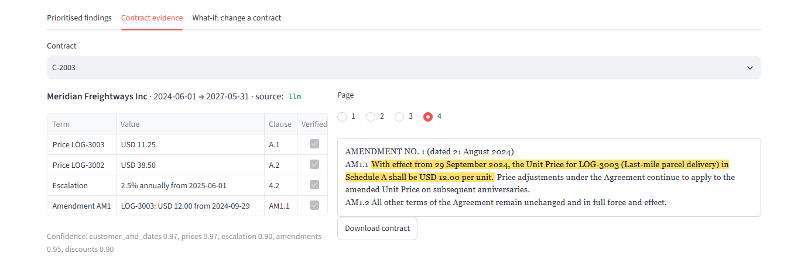
04_contract_evidence_C2003.png · Leakage Analysis → Contract evidence → C-2003 → Page 4The money reveal — Finding F-003
USD 82,107.94 potential underbilling across 15 invoice lines (Oct 2024 – Dec 2025). The chart shows the contract price stepping up to 12.00 and then 12.30 while billing stayed at 11.25 and then 11.53.
"The contract changed and billing didn't follow. When the 2.5% escalation arrived, billing applied it to the old price, so the gap keeps compounding. This is a potential underbilling for Finance to validate, not recovered cash."
Unstructured contract text becomes a quantified, explainable Finance case.
"I can see exactly what was missed and why."
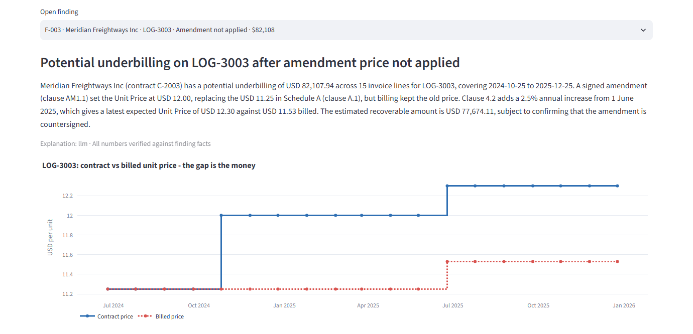
05_finding_F003_money_reveal.png · Leakage Analysis → Prioritised findings → F-003 (opened by the Home button)Evidence to action
Three quoted clauses (price A.1, escalation 4.2, amendment AM1.1); the calculation USD 12.00 × (1 + 2.5%) = USD 12.30; an owner, a recommended action and a draft rebilling note; and the affected invoice lines.
"Every number is one click from the clause and the invoice line. The AI read the contract; plain arithmetic calculated the money. And the finding arrives with an owner and a next step."
AI reads the evidence and the financial engine calculates the money. That split is the core differentiation.
"I could audit this."
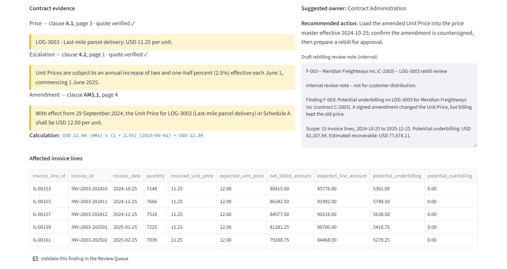
06_evidence_to_action.png · Same finding, lower half. Next click: Validate this finding in the Review QueueLimitation: no single screen shows the whole chain. Contract evidence, calculation and invoice lines are here; the Finance action is on the next screen.
Finance review workflow — Review Queue
F-003 awaiting review, with its evidence, calculation, owner and action, and a decision form (validated, unresolved or closed). The recovery panel stays empty: "Recovery starts only after Finance validates the finding."
"The system doesn't replace Finance judgement. It packages the evidence so a person can decide faster, and every decision is written to an audit log."
A person stays accountable for every recovery action.
"Finance stays in control."
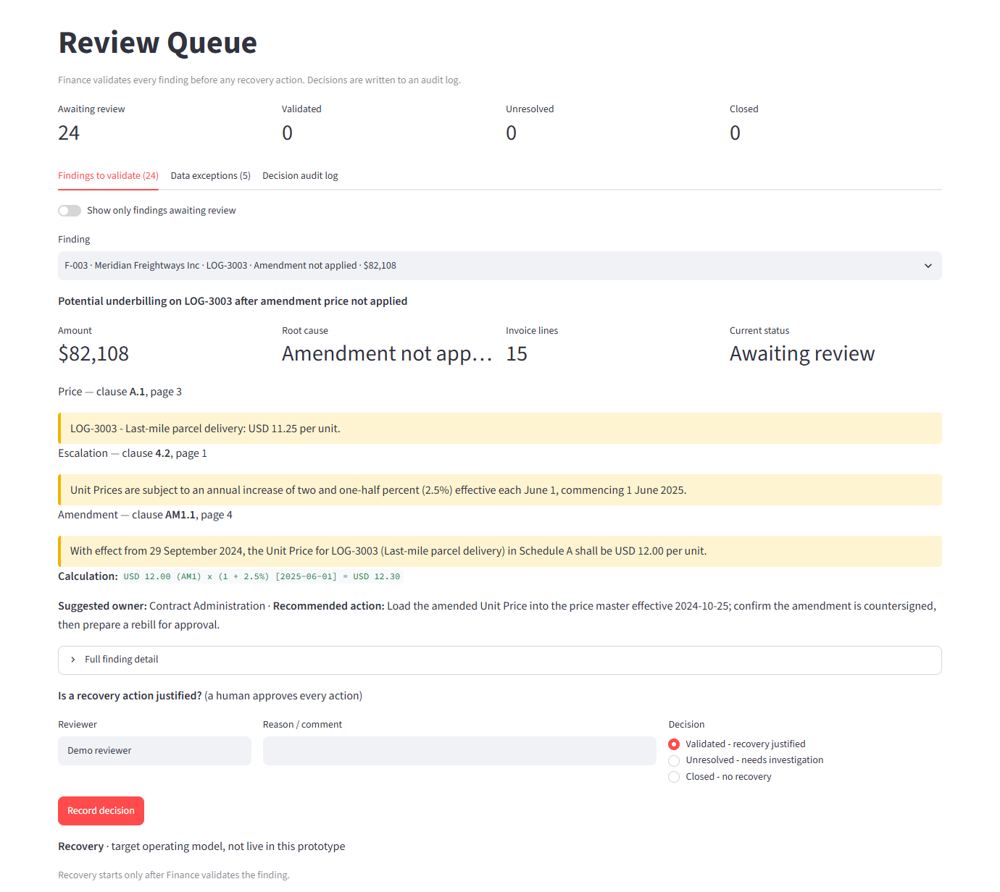
07_review_queue.png · Home → Priority case → ValidateThe control moment — refusing to guess
Invoice line IL-00801 (contract C-2015) was billed in EUR against a USD contract. Status REVIEW: "no FX conversion policy is configured". No leakage figure is produced. Other held lines include an invalid date, a blank amount and duplicates.
"It doesn't guess an exchange rate. No approved FX policy, no number. A person decides."
A trustworthy Finance tool is defined as much by when it declines to produce a number as by what it finds.
"This is built for financial control, not just AI answers."
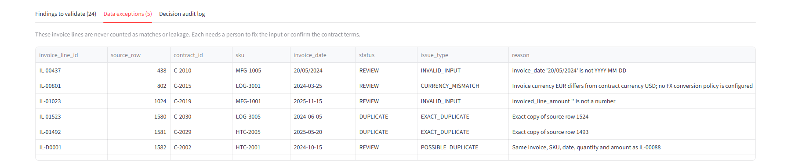
08_currency_exception_control.png · Review Queue → Data exceptions · the EUR/USD case is the second row (captured in a wider window so the full reason is readable)Limitation: the app doesn't highlight the EUR row, so point to it on stage. The tab reads "Data exceptions (5)" while the table lists more rows, because exact duplicates are counted separately.
Business outcome and path to cash
The reviewer records "Validated – recovery justified" for F-003. The recovery panel then shows: validated opportunity $82,108 · billing correction: draft note ready · receivable raised: not yet tracked · cash recovered: not yet tracked.
"Detected is not validated, and validated is not cash. We are not claiming AI recovers cash. We bridge the gap between what the contract entitles and what Finance acts on. The rebill, the receivable and the cash receipt are what a pilot would connect."
It ends on a credible, measurable path to cash instead of a claimed recovery.
"This is a practical proposition we could pilot."
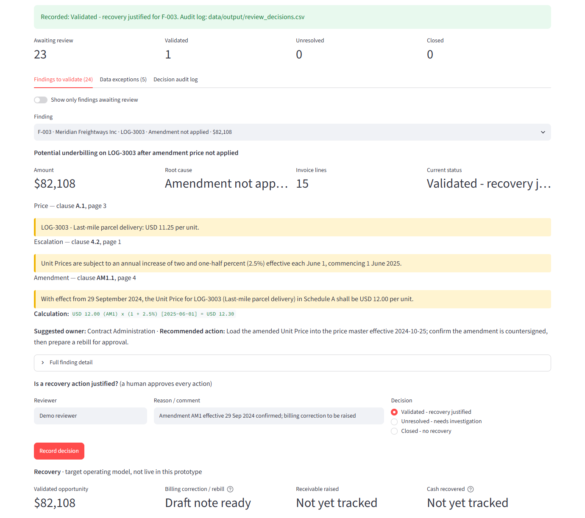
09_business_outcome_path_to_cash.png · Review Queue → Validated – recovery justified → Record decision (synthetic walkthrough; the reviewer and comment were entered for the demo)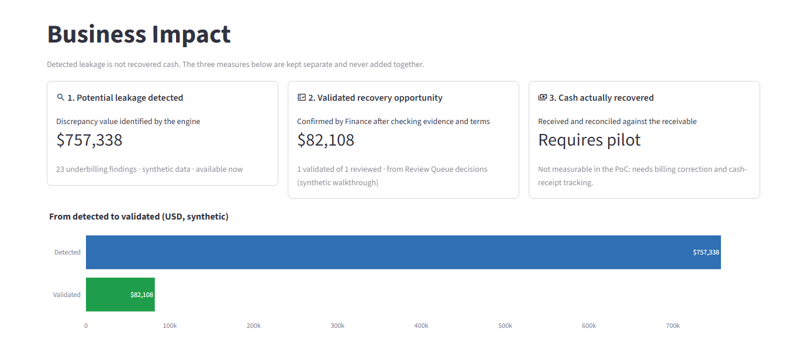
09b_business_impact.png · Business Impact: detected $757,338 → validated $82,108 → cash actually recovered: requires pilot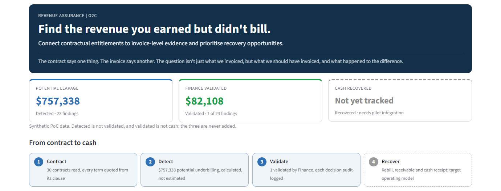
09c_home_after_validation.png · Back on Home: Finance validated moves from $0 to $82,108; cash recovered still reads "Not yet tracked"